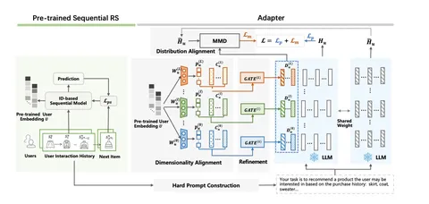

Один из главных трендов RecSys 2024 — внедрение LLM в рекомендательные системы. Большинство работ по теме объединяет излишняя академичность (слишком сложные для реализации подходы), поэтому в индустрии это направление широкого признания пока не получило. Однако сегодняшняя статья вполне практическая: о способе использовать предобученные эмбеддинги рекомендательной модели в LLM.
Идея применять большие языковые модели для генерации рекомендаций популярна, но не нова: обе технологии отлично компенсируют слабые стороны друг друга. Рекомендательные модели слабы в познании мира, а LLM лишены богатого коллаборативного сигнала, который хранится в эмбеддингах и весах рекомендательных нейросетей. Чтобы объединить лучшее, что есть в каждом из подходов, можно интегрировать в LLM предобученные эмбеддинги рекомендательной модели. Адаптер, предложенный в статье, — фреймворк, который встраивает представления пользователя в attention-слои LLM.
Как это устроено, показано на схеме. Эмбеддинги пользователей берутся из рекомендательной модели, предобученной на Next Item Prediction. Hard Prompt Construction сопоставляет пользователя с его текстовым описание (промптом) и формулирует явное указание, что должна сделать модель, чтобы получить предсказание. А адаптер выравнивает размерность эмбеддингов пользователя (линейными слоями повышает её до внутренней размерности LLM) и уточняет эмбеддинги пользователей, смешивая их с промпт-токенами.
Из статьи вы узнаете, как можно решить проблему distribution shift между рекомендательной моделью и LLM, с учётом того, что у каждого слоя языковой модели — свой уровень абстракции и он нуждается в собственной предобработке внешних данных (эмбеддингов пользователей из рекомендательной модели).
@RecSysChannel
Разбор подготовил
